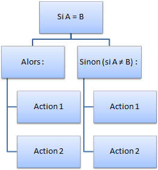

Action : Si ... Alors ... Sinon
Cette action définit une condition dans une fonction. Une condition permet d'exécuter un ensemble d'actions selon un teste (la fameuse condition).
Exemple : Si A = B, Alors on exécute un ensemble d'actions, Sinon (si A est différent de B), on en exécute un autre.
On distingue sept opérateurs de testes :
Différences entre "=" et "Comme" : La différence entre l'opérateur "=" et "Comme" est abstraite. L'opérateur "=" est le plus souvent utiliser pour comparer deux valeurs de type texte (String) ou numérique (Integer, Decimal, Double). L'opérateur "Comme", lui, est utilisé pour comparer deux "objets" (un bouton, une date, un élément d'une liste, ect.)
Exemple :
Si "Texte1" = "Texte2"
Si Elément1 est comme Elément2
Paramètres
| Paramètres | Descriptions |
|---|---|
| Si la variable | Définit la variable contenant la valeur à tester. |
| Est | Permet de choisir l'opérateur de test à utiliser (voir ci-dessus) |
| La valeur | Permet de définir la valeur devant être utilisé pour testé la variable. En outre, la valeur de la variable sera comparé à cette valeur. |
Erreur à ne pas commettre : Pour le paramètre "La valeur", vous ne pouvez pas utiliser des ressources du projet de type Image et de type Autre. Seule des ressources de type Texte peuvent être utilisées.
Erreur à ne pas commettre : Faites très attention à la différence entre l'opérateur "=" et "Comme". Si vous rencontrez un problème lors de la génération à cause de l'un de ces deux opérateurs, essayez avec un autre, puis relancez la génération.
Valeur retournée
Aucune valeur n'est retourné par cette action
Code Visual Basic.Net généré par SoftwareZator
Code généré pour une condition tel que la variable soit "Votre_Variable", l'opérateur "=>" et la valeur "126" :
If (Votre_Variable => 126) Then ' Alors Else 'Sinon End If
Erreurs d'exécutions
Il arrive qu'un programme informatique rencontre un problème durant son exécution. Souvent, un message d'erreur est alors affiché. Le tableau ci-dessous vous permet de déterminer pourquoi l'erreur que vous rencontrez s'affiche et comment la corriger :
| Types d'erreurs | Descriptions | Resolutions |
|---|---|---|
| System.InvalidCastException | Cette erreur se produit lorsque la valeur de la variable à tester n'est pas compatible avec la valeur de teste. En outre, celà signifie que la valeur de la variable de teste ne peut être convertit dans une valeur de même type que celle de teste. Le teste ne peut donc pas être effectué car ces valeurs n'ont aucun point en commun pour les comparer. | Pour corriger cette erreur, arrangez-vous pour que la valeur de la variable de teste soit convertible dans le type de la valeur de teste. Ou bien comparez uniquement une ou des propriétés de la valeur de la variable et de la valeur de teste. Pour cela, utilisez les actions Obtenir le type d'une variable, Convertir la valeur d'une variable, et ou Obtenir une propriété d'une variable |
Caractéristiques
| Caractères | Informations |
|---|---|
| Niveau requis | Débutant |
| Catégorie | Général |
| Type de valeur retourné | {Aucune} |
| Fonctionne dans les fonctions | Oui |
| Fonctionne dans la zone de déclaration | Non |
| Peut recevoir des actions enfants | Oui |